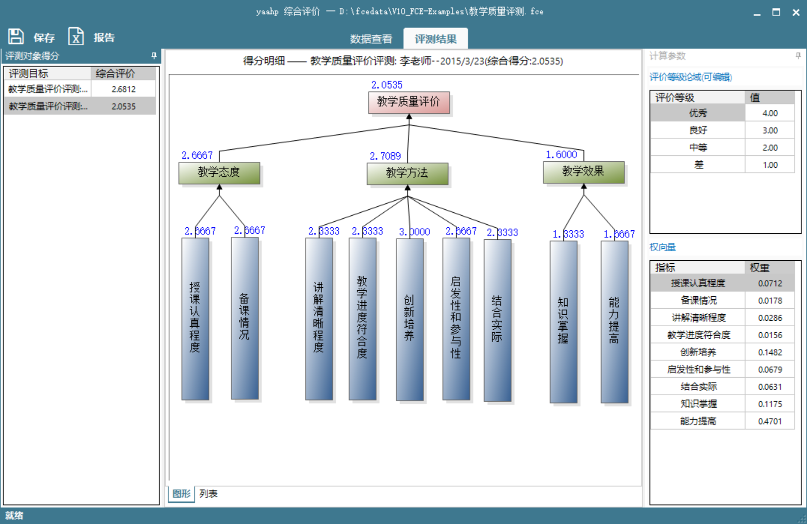
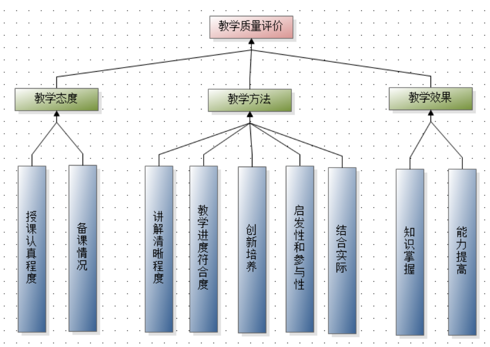
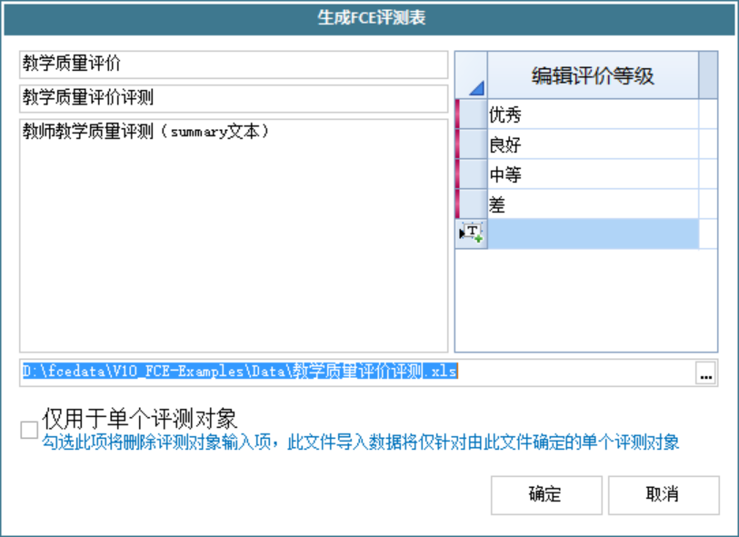
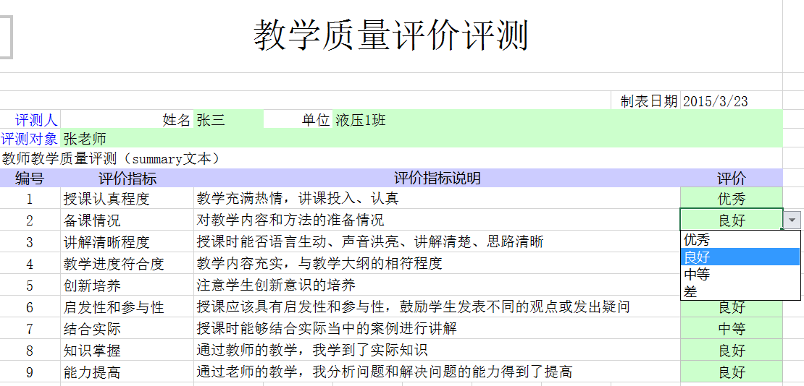
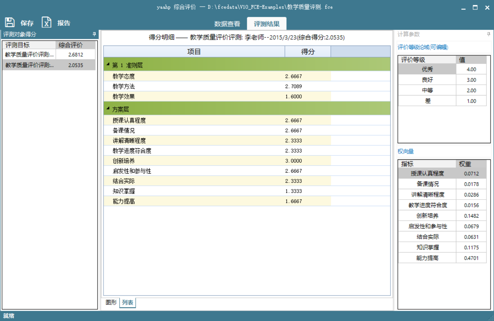
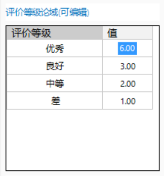

转载自张建华的博客, 原文链接: http://www.jeffzhang.cn/yaahp-fce-introduction/.
独立使用的模糊综合评价法(不与AHP结合)请参考yaahp使用手册”模糊综合评价”部分.
概述
模糊综合评价法(FCE)是一种根据模糊数学隶属度理论把定性评价转化为定量评价的方法. 它具有结果清晰, 系统性强的特点, 能较好地解决模糊的、难以量化的问题, 适合各种非确定性问题的解决.
FCE计算的前提条件之一是确定各个评价指标的权重, 也就是权向量, 它一般由决策者直接指定. 但对于复杂的问题, 例如评价指标很多并且相互之间存在影响关系, 直接给出各个评价指标的权重比较困难, 而这个问题正是AHP所擅长的.
在AHP中, 通过对问题的分解, 将复杂问题分解为多个子问题, 并通过两两比较的形式给出决策数据, 最终给出备选方案的排序权重. 如果把评价指标作为AHP的备选方案, 使用AHP对问题分层建模并根据专家对此模型的决策数据进行计算, 就可以得到备选方案也就是各个评价指标的排序权重. 这样就解决了FCE中复杂评价指标权重确定的问题.
实际中使用AHP-FCE时, 并不是直接给出评价指标, 评价指标的确定是通过分析问题并构造层次模型来完成. 首先利用AHP分层的思想对问题进行分解, 然后把分层后的最下一层中间层要素(准则)作为评价指标, 并将评价指标改为备选方案.
下面内容首先对AHP-FCE的处理流程进行描述, 然后给出一个利用yaahp的AHP-FCE功能进行教师课堂教学质量评价的例子.
AHP与FCE结合的综合评价过程
AHP和FCE结合的综合评价过程一般步骤如下:
1) 确定评价目标;
2) 以“分而治之”的思路, 对评价目标进行分解, 形成准则(Critiaria) 及评价指标(Alternatives), 并最终构造层次模型;
3) 使用这个层次模型生成AHP调查问卷, 邀请专家参与调查;
4) 收集专家们的AHP调查问卷, 得到各个评价指标对评价目标的排序权重. 至此AHP过程完成, 其中的专家调查问卷过程可以利用Delphi方法多轮完成;
5) 以层次模型的评价指标, 也就是方案层要素, 作为评价指标, 生成FCE问卷;
6) 对各个被测对象, 寻找专家/评测人填写FCE问卷;
7) 收集FCE问卷, 根据专家数据及AHP获得的各个评价指标排序权重 (作为FCE的权向量), 计算得到各被测对象的综合评价结果。
其中1-4为AHP过程, 5-7步是FCE 过程。
教学质量评价示例
这部分以一个教师课堂教学质量评价案例为例, 给出使用yaahp进行AHP-FCE评价的示例. 该案例使用的层次模型在文献[1]所提模型的基础上做了部分修改.
构造层次模型
首先对教师课堂教学质量评价进行分析, 构造该问题的层次模型, 如下图所示.
注意: 方案层要素为模糊综合评价的各个评价指标.

收集专家数据计算排序权重
生成AHP调查问卷(详见yaahp使用手册”调查问卷”部分), 向专家分发. 专家填写完毕后回收调查问卷并导入yaahp, 经过计算, 得到的各个评价指标排序权重如下图.
生成评测问卷
得到教学质量评价排序权重后, 在yaahp的计算结果页面可以发现“生成评测表”按钮, 如下图所示。
点击“生成评测表”按钮将会打开FCE评测表设定窗口。AHP-FCE的FCE 评测表设定窗口与独立FCE评测表设定窗口相比,不需要输入权向量, 因为权向量直接使用AHP计算结果的排序权重。详见yaahp使用手册”模糊综合评价”部分.

生成的评测表如下图所示.

填写并导入评测问卷
将生成的评测表分发给各个评测人, 评测人用Excel打开该文件将被测对象评测数据填入评测表。
回收评测表后, 使用模糊综合评价的“导入”功能, 导入的所有的评测问卷。
模糊综合评价结果
导入数据后会打开FCE窗口, 如下图, 各个被测对象的综合评价分值显示在左侧列表中. 此外, 在中间区域可以看到层次模型中各个要素的评价值, 下图可以看出李老师的”教学效果”得分较低.
除了图形形式的详细得分情况外, 还可以用表格形式查看, 如下图.

修改评价等级论域
在模糊综合评价计算中, 最后一个计算步骤是去模糊, 从而得到最终的评价分值. 去模糊有多种方法可用, 一般常用的是设定评价等级论域然后加权平均, yaahp中采用了这种方法.
设定评价等级论域也就是为各个评价等级设定分值, yaahp中可以在FCE计算结果右侧上方的表格中进行设定, 如下图所示.

评价等级论域设定修改后, 综合评价结果和详细得分情况会实时更新。
参考文献
[1] 丁家玲, 叶金华. 层次分析法和模糊综合评判在教师课堂教学质量评价中的应用[J]. 武汉大学学报: 哲学社会科学版, 2003, 56(2): 241-245.
Copyright
本文版权归张建华(Jianhua Zhang、两招)所有，转载或引用请注明出处.
本文引用信息:
张建华. 结合层次分析法和模糊综合评价法的评价方法-利用yaahp[OL]. http://www.jeffzhang.cn/yaahp-fce-introduction, 2015-03-25.
Zhang Jianhua. Combination evaluation method of Analytic Hierarchy Process and Fuzzy Comprehensive Evaluation based on yaahp[OL]. Available: http://www.jeffzhang.cn/yaahp-fce-introduction, March 25, 2015.